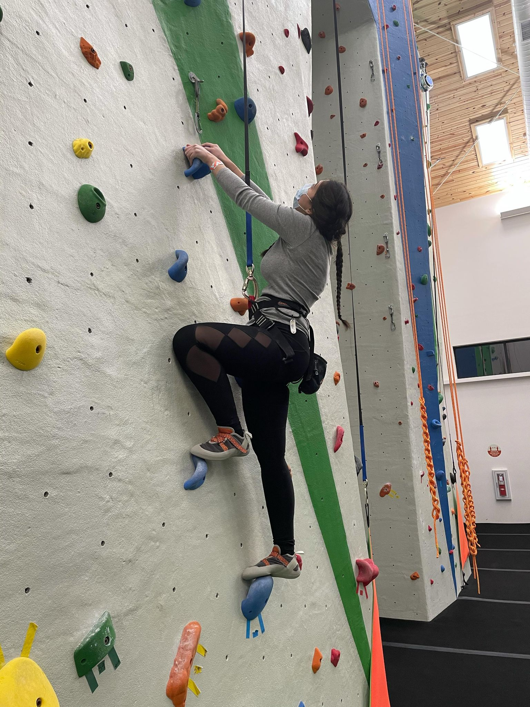
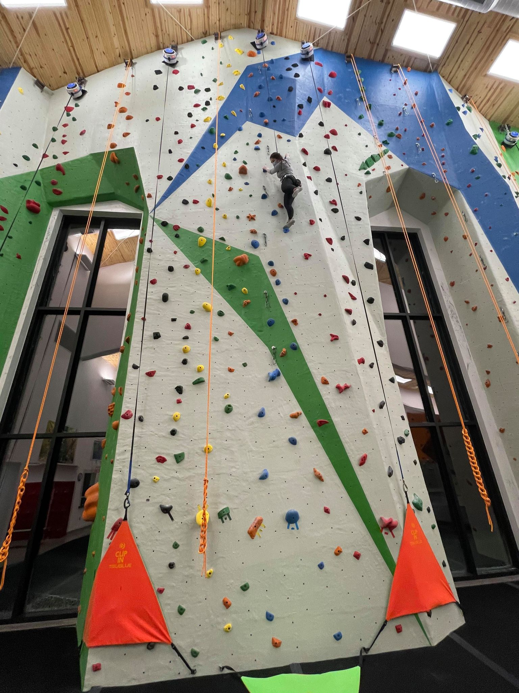
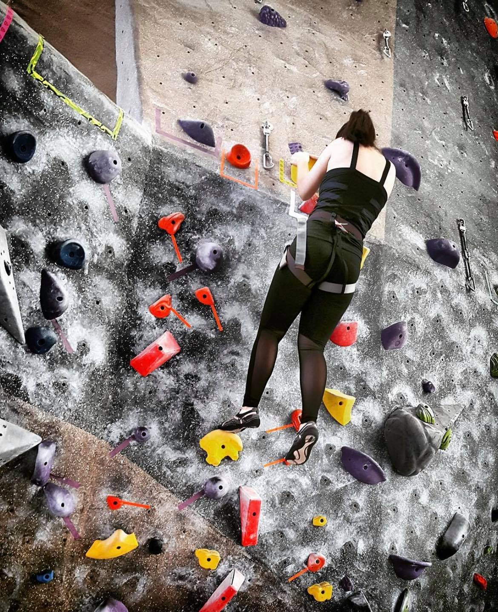

Types of Rock Climbing
The rock climbing gyms I go to have 3 basic types of rock climbing available:
- Top Rope
-
This type of climbing requires you to wear a harness and has a pulley system in place that helps you come back down when you're done climbing. You can choose to climb with a 'manual' system where you have a partner and they are using the rope to help guide you up and bring you back down, or you can choose the automatic machines. Personally, the automatic machines are my favorite because I don't really have a rock climbing partner and they are more challenging. With a person, if you fall, they catch you and you can continue on from where you fell. With the automatics however, you fall all the way to the ground and you have to start from the beginning.
-
In these pictures I am climbing 5.6 to 5.7 routes which are the easiest for top rope climbing but are perfect for takin it easy as I get back into it (as well as for building up those calluses again).
-  
-
This type of climbing is a free climb where you are not attached to any ropes or harnesses. We have padding directly below the walls and are only allowed to free climb up to 14 feet since it is dangerous to fall any higher than that. Since bouldering tends to be very dynamic and has shorter climbing distances, it requires a lot of strength. Needless to say, this was not the first climbing type I learned.
-
The picture below is from when I was learning to boulder. I was not very comfortable falling yet so it took a lot of time for me to get used to.
- 
-
I have never tried lead, mostly because I don't have a rock climbing partner, but it is probably the most challenging of the three. You have to be very confident in your climbing abilities. I can't speak too much on lead climbing, I just know that you are basically taking yourself up by putting your rope through attachments on the wall. If you fall, you fall the difference in the length of where you are and where you last put your rope through the attachment. I hope to be able to try this someday.